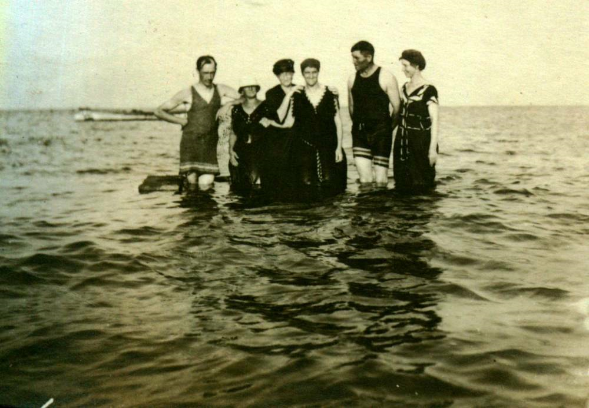

Brief photo caption documenting a St. Paul's Presbyterian Church picnic event at Bayside that included Edgar Fowlie, from the Glendenning collection. A minimal document providing context for a historical church photograph.
ST. PAUL’S PRESBYTERIAN CHURCH

Church picnic at Bayside,
including: Edgar Fowlie,
Edgar Fowlie,
Glendenning
collection